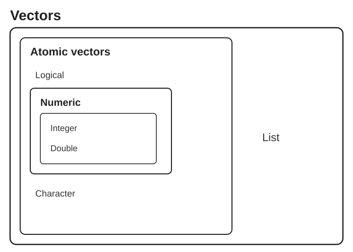

#!/usr/bin/env Rscript
# Script: fasta_stats.R
# Purpose: Calculate basic statistics for a FASTA file
args <- commandArgs(trailingOnly = TRUE) # like $1 $2 ... in bash
if (length(args) != 1) {
cat("Usage: Rscript fasta_stats.R sequences.fasta\n")
quit(status = 1)
}
input <- args[1]
if (!file.exists(input)) {
cat("Error: File", input, "not found!\n")
quit(status = 1)
}
lines <- readLines(input)
headers <- grepl("^>", lines) # TRUE for header lines
seq <- paste(lines[!headers], collapse = "")
cat("=== FASTA Statistics for", input, "===\n")
cat("Number of sequences:", sum(headers), "\n")
cat("Total length:", nchar(seq), "bp\n")
cat("Average length:", nchar(seq) / sum(headers), "bp\n")
n_count <- sum(strsplit(seq, "")[[1]] %in% c("N", "n"))
cat("N bases:", n_count, "\n")
gc <- sum(strsplit(toupper(seq), "")[[1]] %in% c("G", "C"))
cat("GC content:", round(100 * gc / nchar(seq), 1), "%\n")
orfs <- regmatches(seq, gregexpr("ATG([ACGT]{3}){20,}(TAA|TAG|TGA)", seq))[[1]]
cat("ORF-like stretches:", length(orfs), "\n")Lecture 05
R and Python Fundamentals 1: Scripts, Variables, Vectors and Types
Bill Cresko
2026-10-26
Book reading for this lecture
The course book goes deeper on everything in this lecture. Read before or after class:
Goals for today
- Warm-up: L04’s
fasta_stats.shrewritten in R and in Python - Using Positron, Visual Studio Code and RStudio as script editors
- Why R and Python - same ideas, different syntax
- Scripts, variables, arithmetic, strings and vectors
- Types of data and getting help
Warm-up - last week’s script in R and Python
The same script in R and Python
In L04 we wrote fasta_stats.sh. It works, but counting and arithmetic get awkward in bash. Here is the same program as an R script and a Python script - both take the file name as a command-line argument. Read them as a preview: variables, strings, vectors and functions are exactly what L05-L07 teach.
#!/usr/bin/env python3
# Script: fasta_stats.py
# Purpose: Calculate basic statistics for a FASTA file
import re
import sys
from pathlib import Path
if len(sys.argv) != 2: # sys.argv[0] is the script name, like $0
print("Usage: python3 fasta_stats.py sequences.fasta")
sys.exit(1)
input_file = Path(sys.argv[1])
if not input_file.is_file():
print(f"Error: File {input_file} not found!")
sys.exit(1)
lines = input_file.read_text().splitlines()
headers = [line for line in lines if line.startswith(">")]
seq = "".join(line for line in lines if not line.startswith(">"))
print(f"=== FASTA Statistics for {input_file} ===")
print(f"Number of sequences: {len(headers)}")
print(f"Total length: {len(seq)} bp")
print(f"Average length: {len(seq) / len(headers):.1f} bp")
n_count = seq.count("N") + seq.count("n")
print(f"N bases: {n_count}")
gc = seq.upper().count("G") + seq.upper().count("C")
print(f"GC content: {100 * gc / len(seq):.1f}%")
orfs = re.findall(r"ATG(?:[ACGT]{3}){20,}(?:TAA|TAG|TGA)", seq)
print(f"ORF-like stretches: {len(orfs)}")Running R and Python scripts from the shell
Rscriptruns the file top to bottom and prints only what youcat()orprint()- In Positron / VS Code / RStudio: open the
.Rfile and pressCmd/Ctrl-Enterto send lines to the console
python3 fasta_stats.py chr21.fa # run with the interpreter ...
chmod +x fasta_stats.py # ... or make it executable
./fasta_stats.py chr21.fa # (needs the #!/usr/bin/env python3 shebang)
python3 -c 'print(sum([1, 2, 3]) / 3)' # one-liner without a file
python3 # interactive REPL; quit with exit() or Ctrl-Dpython3 script.pyruns the file top to bottom and prints only what youprint()- In VS Code / Positron: open the
.pyfile and pressCmd/Ctrl-Enter, or use the Run button - Keep project packages in a virtual environment:
python3 -m venv .venv && source .venv/bin/activate(environments get their full story in L07)
Tip
Both scripts return an exit status (quit(status = 1) / sys.exit(1)), so a shell pipeline or SLURM job can tell whether they succeeded - just like exit 1 in bash. In Lecture 08 we submit these scripts to Talapas with Rscript and python3 inside an sbatch job.
R and Python: two scripting languages for data
Why use R?
- Good general scripting tool for statistics and mathematics
- Powerful and flexible and free
- Runs on all computer platforms
- New enhancements coming out all the time
- Superb data management & graphics capabilities
- Reproducibility - can keep your scripts to see exactly what was done
- You can write your own functions
- Lots of online help available
- Can use a nice IDE such as
PositronorRStudio - Can embed your
Ranalyses in dynamic, polished files usingQuarto Markdown - Quarto Markdown can be reused for websites, papers, books, presentations…
Why use Python?
- A general-purpose language that is also excellent for data analysis (
pandas,numpy,matplotlib,scipy) - The language of machine learning, image analysis and instrument control (
scikit-learn,PyTorch,scikit-image) - Free, open source, runs everywhere - including Talapas (
module load python3) - Huge ecosystem:
pip installgives you access to >500,000 packages on PyPI;condaadds compiled scientific tools - Readable syntax; indentation is the structure of the code
- Runs as scripts (
python3 script.py), interactively (REPL / IPython), in Jupyter notebooks, and in Quarto{python}chunks - Same IDEs: Positron and VS Code run R and Python side by side
Tip
You do not have to choose. Most computational biologists use both: R for statistics and figures, Python for pipelines, images and machine learning. This lecture shows every idea in both languages - use the tabs.
Your IDE: the four panes

| Pane | RStudio location | Positron equivalent | Purpose |
|---|---|---|---|
| Code editor | Top-left | Editor tabs | Write/edit scripts and .qmd files |
| Console | Bottom-left | Console (R or Python) | Interactive session; run one line |
| Environment | Top-right | Variables | Objects you have created, history |
| Files / Plots / Help | Bottom-right | Explorer, Plots, Help, Data Explorer | Navigate files, view plots, read docs |
Tip
R and Python are the languages; RStudio, Positron and VS Code are the IDEs you write them in. Write code in the editor so it is saved, and send lines to the console with Cmd/Ctrl-Enter. Customize the RStudio layout in Tools → Global Options → Pane Layout; in Positron, drag panes or use View → Appearance.
R vs Python: same ideas, different syntax
| Idea | R | Python |
|---|---|---|
| Assignment | x <- 5 |
x = 5 |
| Counting starts at | 1: x[1] is the first element |
0: x[0] is the first element |
| Last element | x[length(x)]; x[-1] drops the first |
x[-1] is the last |
| Sequence of values | vector c(1, 2, 3) |
list [1, 2, 3] or numpy array np.array([1, 2, 3]) |
| Vector arithmetic | x^2 on any vector |
x**2 only on a numpy array (a list needs a loop) |
| Table of data | data.frame / tibble |
pandas DataFrame |
| Load a package | library(dplyr) |
import pandas as pd |
| Install a package | install.packages("dplyr") |
pip install pandas (or uv, conda) |
| Chain steps | pipe x \|> f() \|> g() |
method chaining x.f().g() |
| Blocks | curly braces { } |
indentation (4 spaces) |
| Missing value | NA |
None, float("nan"), pd.NA |
| Help | ?mean |
help(statistics.mean) or mean? in Jupyter |
Scripts, notebooks and Quarto Markdown
- A script (
.R,.py) is a text file of commands run top to bottom - you have been writing these since L02 (shebang on line 1,chmod +x, run withRscript/python3) - Quarto Markdown (
.qmd) embeds{r}and{python}code chunks in prose - annotated, reproducible documents (these slides are one!) - Python also has Jupyter notebooks (
.ipynb): code cells + output + Markdown - popular, but stored as JSON, which is hard to read and diff in Git; Quarto gives the same workflow in plain text - Chaining steps: R uses the pipe (
x |> f() |> g()), Python uses method chaining (data.dropna().groupby("x").mean()) - Rule of thumb: a script for things that just run, Quarto when you want prose + code + output together
BASICS of R and Python
- Commands can be submitted through the terminal, console or scripts (R:
R/Rscript; Python:python3/python3 script.py) - Notice on these slides I’m evaluating the code chunks and showing output
- Also notice that both languages follow the normal priority of mathematical evaluation
- Careful: exponent is
^in R but**in Python (^in Python is bitwise XOR!)
Assigning Variables
- Assign values with
<-in R and=in Python; names must begin with a letter (or_in Python) - and both languages are case sensitive
Arithmetic operations on functions
- Arithmetic operations can be performed easily on functions as well as numbers.
- Try the following, and then your own.
- Note that the last of these -
log- is a built in function ofR, and therefore the object of the function needs to be put in parentheses - In Python,
loglives in themathmodule, so weimport mathonce and callmath.log(x)(numpyhasnp.log()for whole arrays) - These parentheses will be important, and we’ll come back to them later when we add arguments after the object in the parentheses
- The outcome of calculations can be assigned to new variables as well, and the results can be checked using the ‘print’ command
Arithmetic operations on functions
STRINGS
- Variables and operations can be performed on characters as well
- Note that characters need to be set off by quotation marks to differentiate them from numbers
- The
cstands forconcatenate; in Python square brackets[ ]build a list - Note that we are using the same variable names as we did previously, which means that we’re overwriting our previous assignment
- A good rule of thumb is to use new names for each variable, and make them short but still descriptive
STRINGS
VECTORS
- In general
Rthinks in terms of vectors (a list of characters, factors or numerical values). - It will benefit any
Ruser to try to write programs with that in mind, as it will simplify most things. - Vectors can be assigned directly using the
c()function and then entering the exact values. - Python has lists (
[ ]) for any collection, and numpy arrays (np.array()) when you want R-style vector math x^2squares every element of an R vector; in Python that only works on a numpy array - a list needs a loop or a list comprehension
VECTORS
VECTORS (cont.)
Basic Statistics
- Many functions exist to operate on vectors.
- Combine these with your previous variable to see what happens.
- Also, try to find other functions (e.g. standard deviation).
- Notice that the last function (
sample) has an argument (replace=T); in Pythonrandom.choices()samples with replacement andk=sets how many - Python functions come in two flavours:
np.median(x)(function) andx.mean()(a method attached to the array) - Arguments simply modify or direct the function in some way
- There are many arguments for each function, some of which are defaults
Tip
In Weeks 6-7 you will run exactly these functions on real columns of our stickleback table (data/Stickle_RNAseq.tsv).
Getting Help
- Getting Help on any function is very easy - just type a question mark and the name of the function (R), or
help(function)in Python. - There are functions for just about anything within
Rand it is easy enough to write your own functions if none already exist to do what you want to do. - In general, function calls have a simple structure: a function name, a set of parentheses and an optional set of parameters to send to the function.
- Help pages exist for all functions that, at a minimum, explain what parameters exist for the function.
- Help can be accessed a few ways - try them :
Getting Help
import numpy as np, inspect
help(np.mean) # full documentation, any Python
np.mean? # short help - IPython, Jupyter, Positron only
np.mean?? # ... plus the source code
dir(np) # list everything inside a module
[n for n in dir(np) if "mean" in n] # like apropos("mean")
inspect.signature(np.mean) # like args(mean)Creating vectors
- Typing vectors in by hand is a drag - use generating functions instead:
seq()in R;range(),np.arange(),np.linspace()in Python - Try the examples and vary the arguments - can you work out what each one does?
[1] 0.0 0.1 0.2 0.3 0.4 0.5 0.6 0.7 0.8 0.9 1.0 1.1 1.2 1.3 1.4
[16] 1.5 1.6 1.7 1.8 1.9 2.0 2.1 2.2 2.3 2.4 2.5 2.6 2.7 2.8 2.9
[31] 3.0 3.1 3.2 3.3 3.4 3.5 3.6 3.7 3.8 3.9 4.0 4.1 4.2 4.3 4.4
[46] 4.5 4.6 4.7 4.8 4.9 5.0 5.1 5.2 5.3 5.4 5.5 5.6 5.7 5.8 5.9
[61] 6.0 6.1 6.2 6.3 6.4 6.5 6.6 6.7 6.8 6.9 7.0 7.1 7.2 7.3 7.4
[76] 7.5 7.6 7.7 7.8 7.9 8.0 8.1 8.2 8.3 8.4 8.5 8.6 8.7 8.8 8.9
[91] 9.0 9.1 9.2 9.3 9.4 9.5 9.6 9.7 9.8 9.9 10.0 [1] 100.00 98.01 96.04 94.09 92.16 90.25 88.36 86.49 84.64 82.81
[11] 81.00 79.21 77.44 75.69 73.96 72.25 70.56 68.89 67.24 65.61
[21] 64.00 62.41 60.84 59.29 57.76 56.25 54.76 53.29 51.84 50.41
[31] 49.00 47.61 46.24 44.89 43.56 42.25 40.96 39.69 38.44 37.21
[41] 36.00 34.81 33.64 32.49 31.36 30.25 29.16 28.09 27.04 26.01
[51] 25.00 24.01 23.04 22.09 21.16 20.25 19.36 18.49 17.64 16.81
[61] 16.00 15.21 14.44 13.69 12.96 12.25 11.56 10.89 10.24 9.61
[71] 9.00 8.41 7.84 7.29 6.76 6.25 5.76 5.29 4.84 4.41
[81] 4.00 3.61 3.24 2.89 2.56 2.25 1.96 1.69 1.44 1.21
[91] 1.00 0.81 0.64 0.49 0.36 0.25 0.16 0.09 0.04 0.01
[101] 0.00import numpy as np
seq_1 = np.linspace(0.0, 10.0, 101) # 101 points from 0 to 10 (step 0.1)
print(seq_1)
# [ 0. 0.1 0.2 ... 9.8 9.9 10. ]
seq_2 = np.linspace(10.0, 0.0, 101)
seq_square = seq_2 * seq_2 # element-wise ...
seq_square_new = seq_2**2 # ... same result
print(seq_square_new)
# [100. 98.01 96.04 ... 0.04 0.01 0. ]
list(range(10)) # integers 0, 1, ..., 9 (start defaults to 0; stop excluded!)Types of data
| Categorical | Quantitative | ||
| Ordinal | Nominal | Ratio | Interval |
| small, medium, large | apples, oranges, bananas | kilograms, dollars, years | temperature, calendar year |
| ordered character | character | numeric | integer |
‘Factor’ is a special type of character variable that we will explore more later
Types of vectors of data
intstands for integersdblstands for doubles, or real numberschrstands for character vectors, or stringsdttmstands for date-times (a date + a time)lglstands for logical, vectors that contain only TRUE or FALSEfctrstands for factors, which R uses to represent categorical variables with fixed possible valuesdatestands for dates
- Integer and double vectors are known collectively as numeric vectors.
- In
Rnumbers are doubles by default.
The hierarchy of R vector types

Atomic vectors (logical, numeric, character) and the augmented types built on them (factors, dates, date-times)
Types of vectors of data
- Logical vectors can take only three possible values:
FALSETRUENAwhich is ‘not available’.
- Integers have one special value: NA, while doubles have four:
NANaNwhich is ‘not a number’Inf-Inf
Types of data in Python
| R | Python | Example |
|---|---|---|
int |
int |
3 |
dbl |
float |
3.0, 2.5e-3 |
chr |
str |
"low" |
lgl |
bool |
True, False |
fctr |
pandas.Categorical |
pd.Categorical(["low", "high"]) |
date / dttm |
datetime.date / datetime.datetime |
datetime.date(2026, 11, 9) |
NA |
None, float("nan"), np.nan, pd.NA |
|
Inf / -Inf |
math.inf / -math.inf |
- Ask with
type(x); a numpy array or pandas column has one dtype for all its values (x.dtype) 7 / 2is3.5(always a float);7 // 2is3(integer division);7 % 2is the remainder1
Backup - reference slides
Fuller versions of material condensed in the live deck; see Ch. 11 and Ch. 12.
R scripts and Quarto Markdown
- Often we want to write scripts that can just be run -
R scripts - We can also embed code in Quarto Markdown files that provide more annotations
- This improves interpretability and reproducibility
- You can insert
R code chunksintoQuarto Markdowndocuments
Python scripts, notebooks and Quarto Markdown
- A
Python script(script.py) is a text file of Python commands run top to bottom withpython3 script.py - A Jupyter notebook (
.ipynb) mixes code cells, output and Markdown - popular in Python, but stored as JSON (hard to read in Git) - The same
Quarto Markdownfile can hold{python}code chunks - Quarto runs them through Jupyter - So the R and Python workflows are the same: script for things that just run, Quarto when you want prose + code + output
R script basics
A series of R commands that will be executed
Can add comments using hashtags
#
Can have pipes (
|>) to connect one step to the next
Python script basics
A series of Python commands that will be executed, top to bottom
Comments also use hashtags
#
Steps are connected with method chaining (
data.dropna().groupby("x").mean()) rather than pipes
Whitespace matters: the body of a loop,
ifor function is indented (4 spaces)
Start scripts with
#!/usr/bin/env python3and run them withpython3 script.py(or./script.pyafterchmod +x)
BioE Computational Tools 2026 - Knight Campus